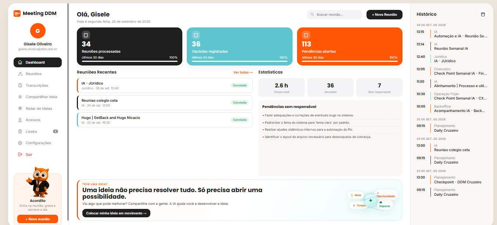

Registro automático de reuniões
Participa das reuniões no Teams, Meet ou Zoom e gera transcrição organizada do que foi discutido.
Reuniões registradas,
resumidas e acionáveis.
Reuniões registradas, resumidas e transformadas em inteligência para a operação.

Participa das reuniões no Teams, Meet ou Zoom e gera transcrição organizada do que foi discutido.
Cria atas inteligentes com decisões, responsáveis, tarefas, pendências e pontos de atenção.
Centraliza reuniões de diferentes áreas em um hub consultável, permitindo acompanhar temas, prioridades e riscos da operação.
Módulos ilustrativos de uma operação acompanhando reuniões, decisões e pendências por área.
Um robô acompanha reuniões no Teams, Google Meet ou Zoom, transforma conversas em registros consultáveis e organiza decisões, riscos, oportunidades, responsáveis e próximos passos por setor, projeto ou área.